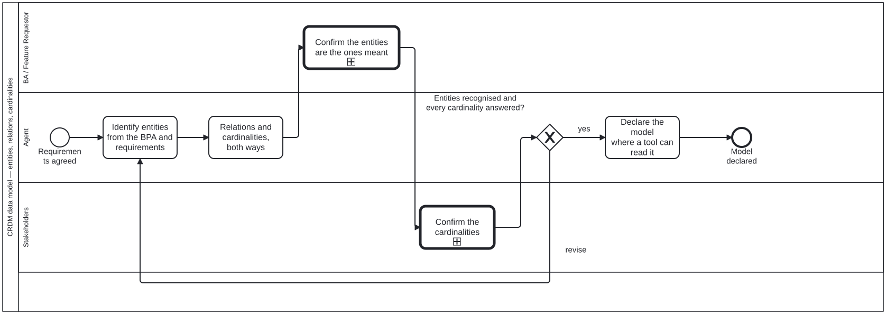

Generated from
cat-harness/processes/process/crdm-data-model.bpmnbygen-processes-viz.ts— do not edit here. All processes
Process_CRDM_DataModel · strict · 5 step(s)
Draft the data model from the BPA and the requirements, have the BA confirm the entities and the stakeholders confirm the cardinalities, and loop until both. A requirement the model cannot express is a finding, not a modelling failure: it means the requirement is about something nobody has named.

| lane | role | what it does here |
|---|---|---|
| BA / Feature Requestor | business-analyst |
Confirms naming only — are these the entities meant — and stops there: Lane_Stakeholders asks the separate, operational question about cardinality next, and the two are kept apart on purpose, because collapsing them into one review is how a wrong cardinality ships invisibly. |
| Agent | authoring-agent |
Does the actual modelling — entities, relations, and the declaration that makes the model machine-readable rather than prose — and absorbs the entire cost of a revise: the gate loops back to A_Entities whichever confirmation failed, BA’s or the stakeholders’, so this lane cannot assume a cardinality objection leaves its entities untouched. |
| Stakeholders | stakeholder |
Answers the operational half the BA cannot — not what a thing is but how many of it there really is — because that is knowable only to the people who run the process day to day. It is also the step this process’s STRICT policy exists for: skipped under time pressure, a model looks finished without it, which is exactly how a hole where the exceptions live would ship unnoticed. |
Every one of the 5 step(s) is documented.
| step | lane | skill / sub-process | what it does |
|---|---|---|---|
Identify entities from the BPA and requirementsA_Entities |
Agent | crdm-data-model |
Every verb in the BPA whose object is a candidate entity, and every noun in a requirement. An entity with no identifier is an attribute of something else — that test is decisive and belongs to the technique skill. |
Relations and cardinalities, both waysA_Relations |
Agent | crdm-data-model |
Stated in both directions, because “one attestation per report” and “one report per attestation” are different claims and a model with only the first cannot say whether a re-signature is an update or a second row. |
Confirm the entities are the ones meantBA_ConfirmEntities |
BA / Feature Requestor | crdm-data-model |
A naming question. The BA owns the domain vocabulary; the agent does not guess, which is CRDM’s own rule for phase 1 and applies here with more force. |
Confirm the cardinalitiesS_ConfirmCardinality |
Stakeholders | crdm-data-model |
An operational question, asked of the people who run the process because they know where the exceptions are. |
Declare the model where a tool can read itA_Declare |
Agent | crdm-data-model |
A model in prose is a proposal; a model in the declaration is a model. Ship a reader in the same change — everything here that was only documentation went inert within weeks. |
Every one of the 1 decision(s) is documented.
| decision | what decides it | branches |
|---|---|---|
Entities recognised and every cardinality answered?GW_Model |
Answered by the BA after confirming cardinalities: are the entities recognised and every cardinality answered? revise returns to identifying entities; yes declares the model where a tool can read it. |
revise → Identify entities from the BPA and requirements yes → Declare the model where a tool can read it |